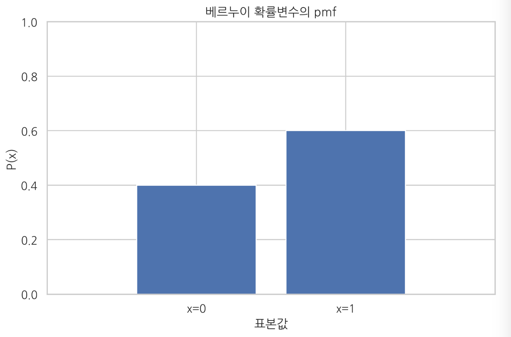
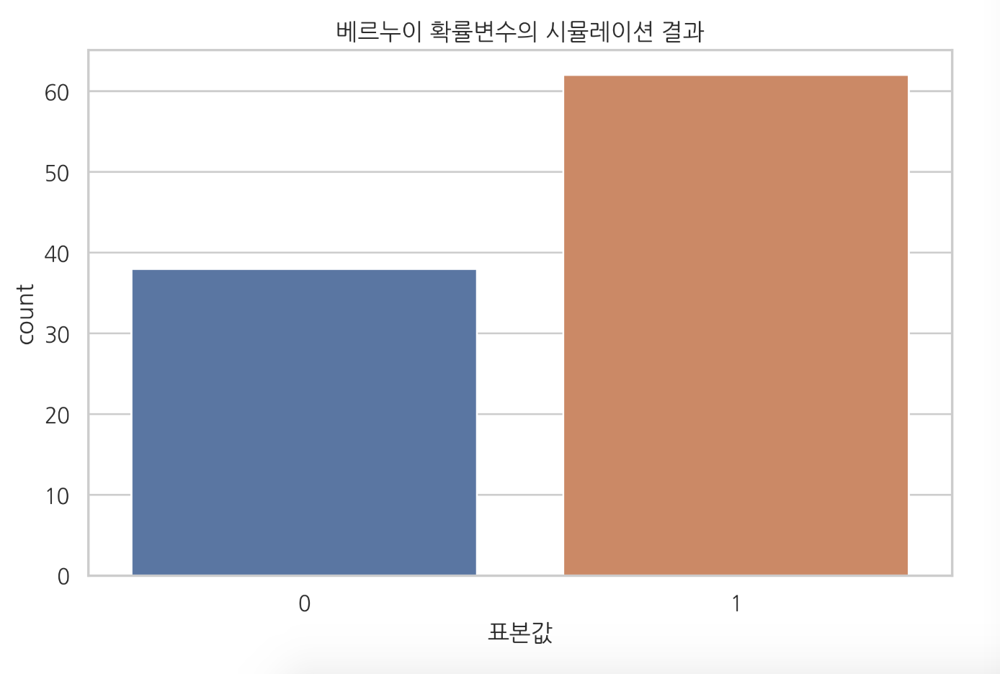

Bernoulli distribution(베르누이 분포) & Binomial distribution(이항 분포)
Summary
- 모수추정(parameter estimation)은 데이터에서 모수의 값을 찾아내는 것이다.
- 베르누이분포는 베르누이 시행 결과를 실수 0 또는 1로 바꾼 것을 베르누이 확률변수라 하고 그 분포를 베르누이 분포라고 한다. 이산확률변수이고 확률질량함수로 정의된다. ,
- 이항 분포(binomial distribution)는 성공확률이 인 베르누이 시도를 번 반복하는 경우이다.
Bernoulli distribution (베르누이 분포)
베르누이 시도
베르누이 시도(Bernoulli trial)는 결과가 두 가지 중 하나로만 나오는 실험이나 시도이다.
베르누이 확률변수
베르누이 확률변수(Bernoulli random variable)는 베르누이 확률변수의 결과를 실수 0 또는 1로 바꾼 것이다. 베르누이 확률변수는 두 가지 값 중 하나만 가질 수 있으므로 이산확률변수(discrete random bariable) 이다.
베르누이 확률변수의 확률질량함서(pdf)는 다음과 같다.
베르누이 확률변수는 1이 나올 확률 을 의미하는 라는 모수(parameter) 가진다.
만약 베르누이 확률변수가 1과 -1 이라는 값을 가질 때 수식
어떤 확률변수 가 베르누이 분포의 의해 발생된다면 "확률변수 가 베르누이 분포를 따른다" 라고 말하고 수식은 다음과 같다.
SciPy를 사용한 베르누이 확률변수의 시뮬레이션
Scipy의 stats 서브 패키지에 있는 bernoulli 클래스는 베르누이 확률변수를 구현하였다. p인수로 분포의 모수 을 설정한다.
# p=0.6
mu = 0.6
rv = sp.stats.bernoulli(mu)
# 확률질량함수 `pmf` 메서드 사용
xx = [0, 1]
plt.bar(xx, rv.pmf(xx))
plt.xlim(-1, 2)
plt.ylim(0, 1)
plt.xticks([0, 1], ["x=0", "x=1"])
plt.xlabel("표본값")
plt.ylabel("P(x)")
plt.title("베르누이 확률변수의 pmf")
plt.show()

표본값을 무작위로 생성하려면 rvs 메서드를 사용한다. 다음 코드는 100개의 표본을 생성한다. 이는 위에서 만든 동전을 100번 던져 나온 결과를 나타낸 것과 같다. 그래서 확률변수의 표본을 생성하는 작업을 시뮬레이션(simulation)이라고도 부른다.
x = rv.rvs(100, random_state=0)
# 생성 결과를 seaborn의 countplot 명령으로 시각화
sns.countplot(x)
plt.title("베르누이 확률변수의 시뮬레이션 결과")
plt.xlabel("표본값")
plt.show()

이론적인 확률분포와 표본의 확률분포를 동시에 보여주고 싶을 때
y = np.bincount(x, minlength=2) / float(len(x))
df = pd.DataFrame({"이론": rv.pmf(xx), "시뮬레이션": y})
df.index = [0, 1]
df2 = df.stack().reset_index()
df2.columns = ["표본값", "유형", "비율"]
# seaborn의 barplot 명령으로 시각화
sns.barplot(x="표본값", y="비율", hue="유형", data=df2)
plt.title("베르누이 분포의 이론적 분포와 시뮬레이션 분포")
plt.show(
베르누이 분포의 모멘트
기댓값
분산
기술통계값들은 SciPy의 describe 명령으로 계산할 수도 있다.
s = sp.stats.describe(x)
#평균 , 분산
s[2], s[3]
베르누이 분포의 모수추정
모수추정(parameter estimation)은 데이터에서 모수의 값을 찾아내는 것이다.
은 전체 데이터의 수, 은 1이 나온 횟수
베르누이 분포의 활용
- 분류예측 문제의 출력 데이터가 두 개의 값으로 구분되는 카테고리 값인 경우에 분류 결과 즉, 두 값 중 어느 값이 가능성이 높은지를 표현하기 위해 사용된다. (베이지안 관점)
- 입력 데이터가 0 또는 1 혹은 참 또는 거짓, 두 개의 값으로 구분되는 카테고리 값인 경우, 두 종류의 값이 나타나는 비율을 표현하기 위해 사용된다. (빈도주의적 관점)
입력 데이터에서 베르누이 분포를 활용하는 방법은 키워드가 여러 개라면 다음과 같이 BOW(Bag of Words) 인코딩된 벡터로 나타낼 수 있다.
Binomial distribution(이항분포)
이항분포
이항 분포(binomial distribution)는 성공확률이 인 베르누이 시도를 번 반복하는 경우이다.
번 중 성공한 횟수를 확률변수 라고 한다면 의 값은 0부터 까지의 정수 중 하나가 될 것이다. 이런 확률변수를 이항분포를 따르는 확률변수라고 한다.
이항 분포 확률변수 의 확률질량함수
기호는 조합(combination) : 개의 원소 중에 개의 원소를 순서와 상관없이 선택할 수 있는 경우의 수를 뜻한다.
! 기호는 팩토리얼(factorial) 이라고 한다.
SciPy를 사용한 이항 분포의 시뮬레이션
이항 분포 확률변수는 Scipy의 stats 서브 패키지에 binom 클래스로 구현되어 있다. n 인수로 전체 시도 횟수 𝑁를 넣고 p 인수로 베르누이 확률 분포의 기댓값 𝜇를 넣는다.
N = 10
mu = 0.6
rv = sp.stats.binom(N, mu)
이항 분포의 모멘트
기댓값
분산
베르누이분포와 이항분포의 모수추정
데이터에서 모수의 값을 찾아내는 것을 모수추정(parameter estimation) 전체 데이터의 수, 1이 나온 횟수